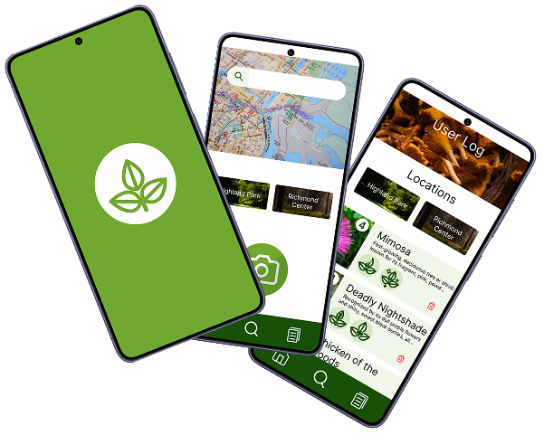
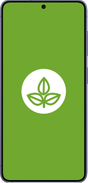

Forager
Know what grows around you.
View Landing PageClean and Simple web design
Shakayla Clark


A body-positive photography booking site that pairs portrait work with natural landscapes to celebrate authentic beauty. Uses a warm flesh-tone palette and a staggered, nature-inspired layout to carry the brand's message from gallery to booking.

A project management web app that gives small teams and freelancers enterprise-level organization without enterprise-level complexity. Consolidates scheduling and cross-project collaboration into one streamlined hub instead of scattering them across separate tools.

A concept app that helps foragers identify plants safely and remember where they found them. Built around a Danger-Usefulness rating system and a location log, designed for use outdoors with dirty hands and no signal.